Home
Research
Publications
Teaching
People
Faculty
Postdoctoral Students
Graduate Students
Undergraduate Students
Research Assistant
Alumni
Past Contributors
Join Our Lab
Publications
Human Computer Interaction
Data Visualization
Health & Medicine
Artificial Intelligence
×
Augmented Math: Authoring AR-Based Explorable Explanations
Shri Harini Ramesh ,
Abstract
Augmented Math: Authoring AR-Based Explorable Explanations...